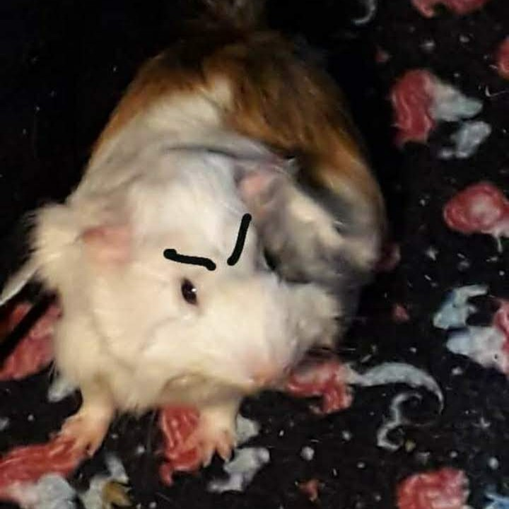

Olá meu chapa, tudo na paz?
Bem vindo ao site Cui Cui Porquinho, aqui você encontrará tudo sobre como cuidar do seu amigo faminto
Me chamo Cecília Menino, porquinho da índia e escritora chefe deste blog
Desenvolvi este site para acabar de vez com todas as dúvidas sobre como cuidar de nós
Basta! Não aguentamos mais viver sem nossa cenourinha de cada dia
Cuida direito de mim, cacete